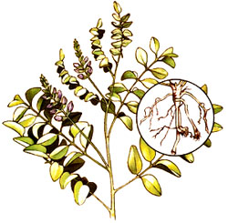
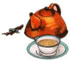

Lately, more and more people have begun to understand just how limited-in both variety and nutritional value our "modern" diets have become. This realization has sparked a new and wide spread interest in the culinary and thera peutic uses of herbs . . . those plants which -although not well -known t oday-were, just one short generation ago, honored "guests" on the dinner tables and in the medicine chests of our grandparents' homes. In this regular feature, MOTHER will examine the availability, cultivation, and benefits of our "forgotten" vegetable foods and remedies . . . and-we hope-help prevent the loss of still another bit of ancestral lore.
You might be surprised to learn that good old-fashioned licorice has an impressive-and in some cases royal-family history. Great stores of the flavorful root were found, alongside priceless art treasures and jewels, in the 3,000-year-old tomb of King Tut. In fact, licorice was considered to be such a valuable herb that no Egyptian king would be without it on his journey into eternity. And even today, a beverage called mai sus, brewed from the sweet yellow root of the licorice shrub, is popular in the Middle East.
LOOKING BACK
The botanical name for licorice, Glycyrrhiza glabra, incorporates the Greek glykys (sweet) and rhiza (root). If you pronounce the tongue-twisting "glycyrrhiza" quickly and casually, you'll know how it came to be "licorice" in English.
This perennial shrub (it's also known as sweetwood or sweet root) grows wild in Asia Minor, Greece, Spain, southern Italy, Iraq, Syria, Russia, and northern China. Large quantities are now shipped into northern Europe for various commercial purposes, but sweet root may have been taken there first by the Romans . . . who ate it because they believed it increased personal stamina.
Try homegrown licorice as a teething stick for children.
Different uses of this medicinal herb have developed over a number of centuries. An old Arabian remedy for skin lesions and blisters, for instance, involved dusting powdered licorice onto the affected skin . . . the ancient Hindus made a tonic of milk, sugar, and licorice to increase virility . . . the Chinese have long consumed great quantities of this wonder herb to ward off old age . . . and medieval Europeans believed the root to be so nutritional and thirst-quenching that a small piece held under the tongue could keep a person alive for 11 or 12 days!
Most of our modern supply of licorice is commercially grown . . . for its medicinal value as a natural laxative and for use as an ingredient in cough mixtures. The thick, black syrup extracted by boiling chopped sweet root is 50 times sweeter than sugar cane, and helps disguise less palatable ingredients.
GROWING YOUR OWN
Of course, most of us know licorice best in the form of the chewy twisted sweets we were fond of as children. Now you can't grow candy sticks in your garden . . . but you certainly can grow licorice plants from live roots. The wrinkled, brownish yellow rootstock will produce-as it comes up each year-a five-foot shrub.
A dry, stony soil in full sun is best for the herb. The plant's stems will bear alternate pinnate leaves-with three to seven pairs of dark green oval leaflets-and pealike, pale lavender or yellow flowers will blossom throughout the summer.
Licorice stems make a tasty tea.
Homegrown licorice stemspeeled of their bark-can be used to prepare a tasty tea . . . or even as teething sticks for small children!
Live licorice roots can be obtained from commercial outlets. One excellent mail order source is Taylor's Herb Garden, Dept. TMEN, 1535 Lone Oak Road, Vista, California 92083.
Or, if you prefer not to grow it yourself, many bulk herb companies can supply whole dried licorice sticks or cut licorice root for making teas, syrups, and candies. Here are two reliable sources: The Herb Shoppe, Dept. TMEN, 3618 El Cajon Boulevard, San Diego, California 92104 . . . and Aphrodisia, Dept. TMEN, 28 Carmine Street, New York, New York 10014 (include $2.50 for this firm's catalog).
|
 |
|
 |